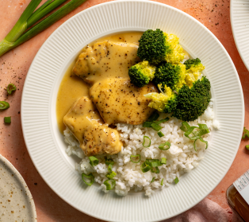
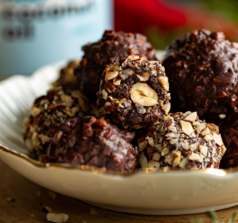
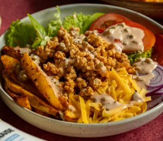

Csirkemellhez
Tálaláshoz
A csirkemellet vágjuk kisebb szeletekre, majd sózzuk és borsozzuk. Egy serpenyőben hevítsük fel az olívaolajat, és pirítsuk meg a húst. Ezután öntsük rá a tejszínt, adjunk hozzá mustárt, mézet, keverjük össze, és pároljuk rövid ideig.
Ha a szósz túl sűrűnek tűnik, adjunk hozzá egy kis vizet. Ezután sóval és borssal fűszerezzük, és már kész is. Tálaljuk rizzsel, főtt brokkolival és apróra vágott újhagymával.
Kezdjük az alap (tészta) előkészítésével. Keverjük össze a mogyorót, majd adjuk hozzá a kakaót, a fehérjét, és keverjük össze a juharsziruppal, a tejjel és a kókuszolajjal, hogy ragacsos keveréket kapjunk. Tegyük be egy órára a hűtőbe, hogy megdermedjen.
Egy óra elteltével a kihűlt keverékből 20 db golyót formázunk. Mindegyik közepébe tegyünk egy-egy mogyorót. Forgassuk meg a golyókat 80 g apróra vágott mogyoróban, majd mártsuk őket kókuszolajjal olvasztott csokoládéba. Ha kész, tegyük őket a hűtőbe, hogy megdermedjenek, majd tálaljuk.
Tésztához
Díszítéshez


Az Alaphoz
Az öntethez
Utolsó Simítások
Mosd meg a burgonyát, majd szeleteld fel. Forgasd össze 1 evőkanál olajjal, az oregánóval, a szárított fokhagymával, 1 evőkanál őrölt édes paprikával, az őrölt borssal és a sóval. Azután helyezd a krumplit sütőpapírral bélelt tepsibe, és süsd 30-40 percig sütőben vagy air fryerben 200 °C-on, amíg aranybarna nem lesz.
A megmaradt olajban pirítsd meg a finomra darabolt hagymát, add hozzá a sóval és borssal fűszerezett húst, majd alkalmanként kevergetve süsd meg az egészet. Végül mehet bele a maradék őrölt paprika és a füstölt paprika. Ezután süsd tovább a húst, amíg kész nincs.
Az öntethez keverd össze a majonézt a ketchuppal, a mustárral, a savanyúuborka-lével, a finomra vágott savanyú uborkával, majd fűszerezd a sóval és az őrölt borssal.
Tálaláskor halmozd a pirított burgonyát, a felaprított salátát, a vékony szeletekre vágott paradicsomot és hagymát, a megsült húst és a durvára reszelt cheddart egy tálba. Azután mehet rá az öntet, és már tálalhatod is.